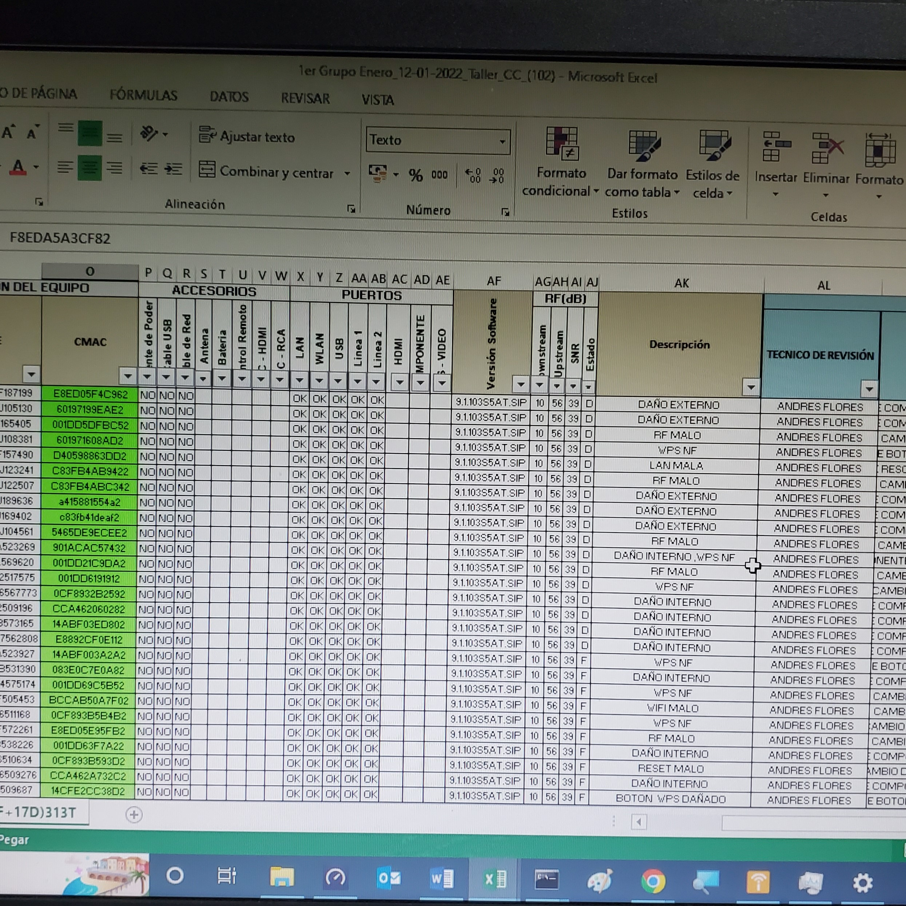
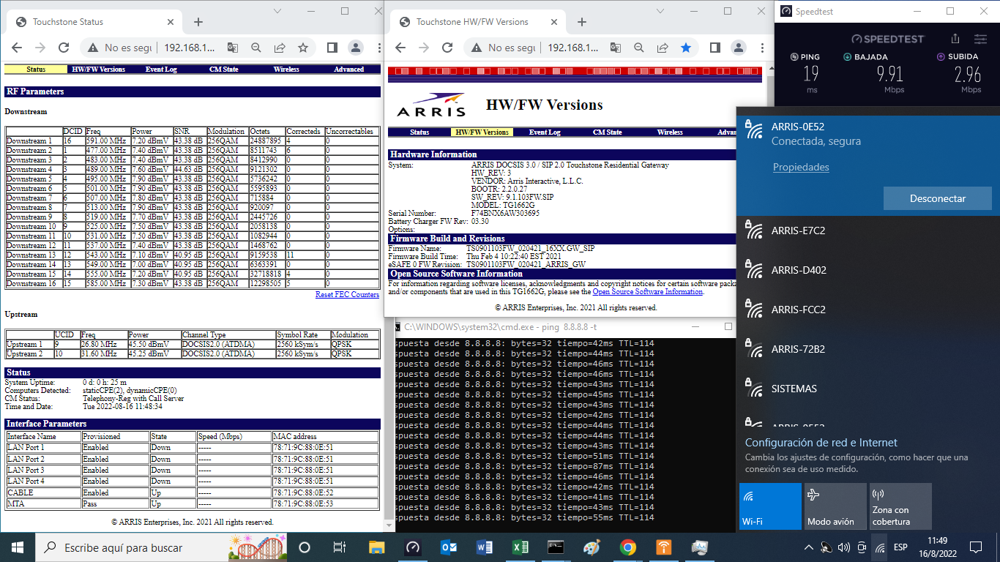

ISG
ISG
ISG
Esto es para que los módems ya revisados estén apartados de los que no funcionan y los que si,
se meten a una hoja de excel, donde se distinguen por color, "naranja" los que no funcionan, y "verde"
los que si funcionan

